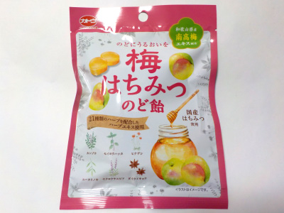

加藤製菓の梅はちみつ。
2023/02/09

100均のダイソーで購入しました。
梅にハチミツと21種類のハーブエキスが入ってて、複雑な味ののど飴です。
色々あるので、なんとなく薬っぽくてノドに良さそうな気分がしました。
愛知県あま市七宝町沖之島上折39番地
2023/02/09

100均のダイソーで購入しました。
梅にハチミツと21種類のハーブエキスが入ってて、複雑な味ののど飴です。
色々あるので、なんとなく薬っぽくてノドに良さそうな気分がしました。